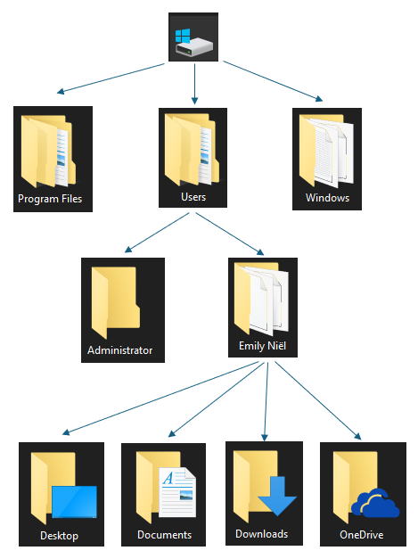
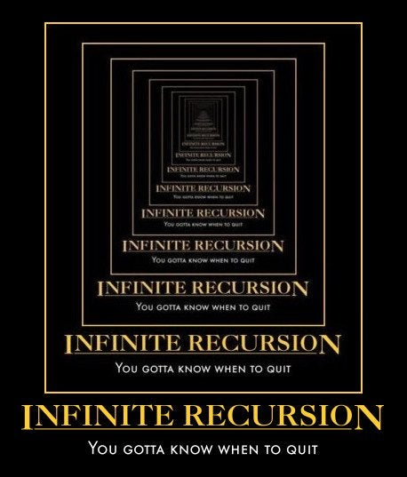

Intro Recursief#
Stel het volgende probleem voor. Je wilt alle namen van alle word documenten printen die in de map documenten staan. Dat is inclusief alle submappen. Deze submappen kunnen ook weer submappen bevatten. Dit kunnen best veel word documenten zijn. Voordat we dit meteen aan programmeren, eerst een plan opstellen. Onthoud, probeer, plan, programeer
Plan#
Als je een plan opstelt kan je dit doen in zogenaamde psuedocode. Dit is niet bestaande programmeer code, maar het geeft wel aan wat je wilt bereiken.
Plan 1
functon print_names(folder):
print alle word documenten
for submap in folder
print alle word documenten
for subsubmap in submap
print alle word documenten
for subsubsubmap in subsubmap
Print alle word documenten
Hoeveel for loops zijn er nodig? Het lastige is dat we niet weten hoeveel submappen er zijn en hoe diep deze mappen gaan. Vergeet niet, het filesysteem is een boomstructuur. Elk map kan submappen bevatten en ook deze submappen kunnen weer hun eigen submappen bevatten en ook deze submappen kunnen weer hun eigen submappen bevatten enz…

Ik wil graag dat de functie print_names() alle namen binnen een map print. Als deze perfect werkt, zou ik deze kunnen gebruiken om ook alle submappen te laten printen. We hebben al eens eerder gezien dat een functie zichzelf mag aanroepen.
Plan 2
function print_names(folder):
print alle word documenten
for subfolder in folder:
print_names(subfolder)
Een oplossing die zichzelf herhaalt#
Stel je een functie voor die het aantal i’s in een string telt en dit als waarde teruggeeft. Dit is een lastig probleem, laten we proberen het eerst uit te schrijven zonder direct in Python te denken. Het resultaat van de functie zou het volgende moeten zijn:
Totaal aantal i’s in "i💙aliens"?
Laat dit de string zijn die we willen gaan onderzoeken en je weet dat een string een opeenvolging van karakters is. We zullen karakter voor karakter moeten controleren (testen) of het gelijk is aan het karakter “i” (en ja, emoji zijn ook karakters :heart:). Karakter voor karakter betekent dat een eerste stap om dit probleem op te lossen de volgende zal zijn:
Aantal i’s in "i" + Aantal i’s in "💙aliens"
We nemen het eerst karakter, tellen het aantal i’s (dit kan voor een enkel karakter 0 of 1 zijn) en tellen daar het aantal i’s in het restant van de string bij op. We herhalen deze handeling voor het eerste karakter van het restant, en tellen daar natuurlijk het resultaat van het eerste karakter bij op:
Aantal i’s in "i" + Aantal i’s in "💙" + Aantal i’s in "aliens"
Et cetera. Je zal hier een patroon zien, het probleem en oplossing herhaalt zich steeds: na het eerste karakter moeten we hetzelfde “recept” steeds weer herhalen voor het restant van de string.
Terzijde, weet je nog dat je het eerste karakter en het restant van een string kan lezen met s[0] en s[1:]?
Paradigmas#
Verschillende manieren om problemen op te lossen:
sequentieeel (iteratief)
zelfgelijkend (recursief)
Problemen zijn op meer dan één manier op te lossen en we komen daarmee aan bij het bestaan van verschillende programmeerparadigmas, dat wil zeggen technieken en benaderingen voor het oplossen van een probleem. Tot nu toe hebben we voornamelijk interatieve constructies gebruikt met behulp van lussen. We gaan nu recursie gebruiken om problemen op te lossen.
Sequentieel denken#
faculteit
wiskunde: \(5! = 120\)
informatica: fac(5) = 5 * 4 * 3 * 2 * 1
Laten we het geheugen even opfrissen wat de faculteit van een getal ook alweer is. Stel je 42 aliens voor en je zou willen weten op hoeveel manieren je deze aliens op een rij kan zetten. Je weet misschien het antwoord, dit is 42 x 41 x 41 … 3 x 2 x 1, of ook wel bekend als de 42 faculteit en (wiskundig) geschreven als \(42!\). Sequentieel denken en daarmee dit probleem oplossen (uitschrijven) als 5 * 4 * 3 * 2 * 1 is heel natuurlijk voor mensen, zo hebben we het als oplossing geleerd!
fac(N) = N * (N-1) * ... * 3 * 2 * 1
Maar zou je fac(5) als een meer algemene versie van zichzelf kunnen schrijven? Dat kan, laten we daar een begin mee maken en je zal zien dat een zichzelf herhalend (terugkerend?) patroon gaat ontstaan, net als bij het aantal i’s in "i💙aliens"…
Recursief denken#
faculteit
wiskunde: \(5! = 120\)
informatica: fac(5) = 5 * 4 * 3 * 2 * 1
fac(5) = 5 * fac(4)
fac(N) = N * fac(N - 1)
Dit is correct…#
def fac(N):
return N * fac(N - 1)
maar is niet aan te raden…
Je kan de funcie fac(N) met de meest algemene vorm (oplossing) nu invulllen. De functie roept zichelf aan met steeds N-1, dit is het patroon dat we hebben kunnen ontdekken. Maar dit is niet volledig correct zoals je misschien zelf al kan zien?

Loop in gedachten eens na wat er gebeurt als je 1 hebt bereikt in deze functie, het zal vrolijk fac(N-1) blijven aanroepen! Dit zal dus doorgaan in een “oneindige recursie” want we hebben nog geen rekening gehouden met de “base case”, het geval waar geen recursieve aanroep meer mogelijk is.
Een base case ontbreekt, de noodstop!
Er is een duidelijk moment dat we de recursie moeten beëindigen, het moment dat geen recursieve aanroep meer mogelijk is. Dit is het moment dat de base case is bereikt (de “noodzakelijk” stop). N-1 gaat uiteindelijk naar negatieve getallen, zou de waarde 0 in dit geval de noodzakelijke stop (de base case) kunnen zijn?
Recursief denken#
def fac(N):
if N == 0: # base case
return 1
else: # recursive case
return N * fac(N - 1)
Je kan testen op de base case, in het geval van een faculteit is dit bereikt als N gelijk is aan 0. Maar als je naar de laatste regel kijkt (N * fac(N-1)), hoe kan iets (N) vermenigvudigd worden met iets dat nog niet is uitgevoerd (fac(N-1))?
Recursief handelen#
def fac(N):
if N == 0: # base case
return 1
else: # recursive case
rest = fac(N - 1)
return N * rest
Deze uitwerking is meer in de buurt van wat achter schermen gebeurt. In het geval N * fac(N - 1) wordt door de computer de recursieve aanroep (fac(N - 1)) eerst aangeroepen om vervolgens daar N mee te vermenigvuldigen. Je kan dit goed vergelijken met het eerst zetten van een variabele (rest in dit geval) die later wordt gebruikt om het antwoord te berekenen (N * rest).
Voordelen van recursie#
Het kan zelfstandig in één keer een willekeurige diepte ingaan
De functie heeft aan zichzelf genoeg en met één aanroep (van ons) lost het zichzelf tot elke willekeurige diepte op! Dit is perfect voor het probleem waar we mee begonnen, namelijk het printen van alle word documenten.
In principe zijn alle problemen iteratief of recursief op te lossen. Het ligt aan het type probleem welke optie de betere/makkelijkere is. We gaan later kijken naar problemen die zich heel goed lenen voor een recursieve oplossing. Eerst oefenen met recursief denken.
Recursie unplugged#
Een groep gevangenen zitten op een rij. De meest rechter dief krijgt een beker in handen gevuld met getallen. Zijn taak is om erachter te komen of het getal 42 in de beker zit. Heeft hij gelijk, dan is de hele groep vrij, heeft hij ongelijk, dan blijft de hele groep een jaar langer gevangen. Er zijn wel een paar regels waar de hele groep zich aan moet houden. Doen ze dat niet, falen ze de test automatisch.
Elke dief mag maar èèn getal uit de beker halen. Niemand anders mag dit getal zien. Daarna geeft hij de beker aan degene die rechts van hem zit.
Elke dief mag 1 keer True of False fluisteren naar zijn/haar linker buur. De rest van de groep mag dit niet horen.
Met welke strategie kunnen ze dit probleem oplossen?
Oplossing#
Elke dief pakt 1 papiertje en geeft dan de beker door aan de linker buurman als 42 niet op het papiertje staat. Als een dief een lege beker krijgt, dan fluistert hij false naar zijn buurman. Die geeft het weer door aan zijn buurman en dat gaat door totdat de eerste dief de informatie heeft.
Als een dief 42 pakt uit de beker stopt hij met het doorgeven van de beker en fluistert hij True naar zijn rechter buurman. Die geeft het weer door aan zijn rechter buurman en dat gaat door totdat de eerste dief de informatie heeft.
def find_forty_two(beker):
if len(beker) == 0: # check of de beker leeg is.
return False # vertel je rechter buurman dat de beker leeg is
papiertje = beker[0] # pak een papiertje
if papiertje == 42: # getal 42 is gevonden
return True # vertel je rechter buurman dat 42 is gevonden
buurman = find_forty_two(beker[1:]) #geef de beker aan je linker buurman en wacht op antwoord.
return buurman # geef vervolgens zijn antwoord door aan je rechter buurman
Je kan het ook zien dat elke dief te lui is om de hele beker te checken voor het getal 42. Inplaats daarvan pakt hij 1 briefje, controleert die en geeft vervolgens aan zijn buurman de rest van beker om te controleren. Hoe de buurman het probleem oplost, dat maakt niet uit. Vervolgens is de buurman ook lui, checkt 1 papiertje en schuift de rest van het werk op een ander.
De functie doet dus 1 stap/berekening en schuift vervolgens de rest van het werk naar de volgende en wacht op resultaat.
Opgave 1#
Een groep gevangenen zitten nogmaals op een rij. De meest rechter dief krijgt een beker in handen gevuld met getallen. Zijn taak is om het hoogste getal te achterhalen. Heeft hij gelijk, dan is de hele groep vrij, heeft hij ongelijk, dan blijft de hele groep een jaar langer gevangen. Er zijn wel een paar regels waar de hele groep zich aan moet houden. Doen ze dat niet, falen ze de test automatisch.
Elke dief mag maar èèn getal uit de beker halen. Daarna geeft hij de beker aan degene die rechts van hem zit.
Elke dief mag èèn getal aan zijn/haar linker buur laten zien.
Met welke strategie kunnen ze dit probleem oplossen?
Opdracht 2#
Een groep gevangenen zitten weer op een rij. Dit keer zijn ze geblinddoekt, ze kunnen elkaar dus niet zien en weten niet hoe groot de groep is. De meest rechter dief krijgt een beker in handen gevuld met papiertjes. Zijn taak is om erachter te komen hoeveel papiertjes er in de beker zit. Heeft hij gelijk, dan is de hele groep vrij, heeft hij ongelijk, dan blijft de hele groep een jaar langer gevangen. Er zijn wel een paar regels waar de hele groep zich aan moet houden. Doen ze dat niet, falen ze de test automatisch.
Elke dief mag èèn papiertje uit de beker halen, Daarna geeft hij de beker aan degene die rechts van hem zit.
Elke dief mag èèn getal fluisteren naar zijn/haar linker buur. De rest van de groep mag dit niet horen.
Met welke strategie kunnen ze dit probleem oplossen?
Opdracht 3#
Een groep gevangenen zitten nogmaals op een rij. De meest rechter dief krijgt een beker in handen gevuld met getallen. Zijn taak is alle getallen bij ekaar op te tellen. Heeft hij gelijk, dan is de hele groep vrij, heeft hij ongelijk, dan blijft de hele groep een jaar langer gevangen. Er zijn wel een paar regels waar de hele groep zich aan moet houden. Doen ze dat niet, falen ze de test automatisch.
Elke dief mag maar èèn getal uit de beker halen. Daarna geeft hij de beker aan degene die rechts van hem zit.
Elke dief mag èèn getal fluisteren naar zijn/haar linker buur. De rest van de groep mag dit niet horen.
Met welke strategie kunnen ze dit probleem oplossen?